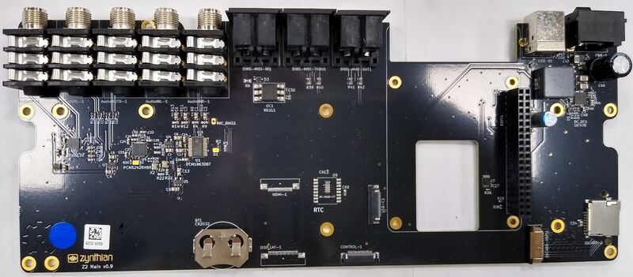
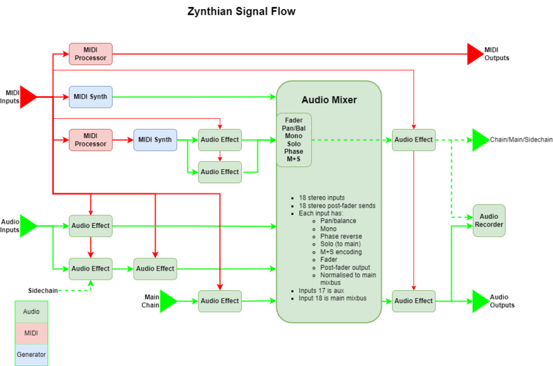
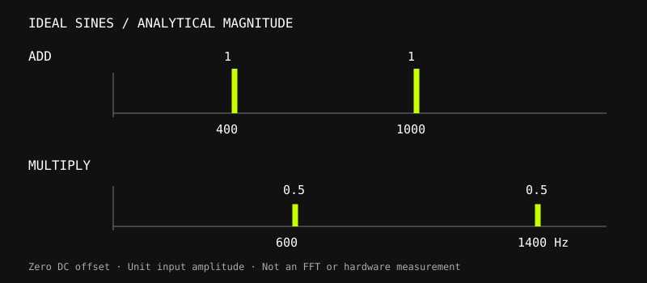
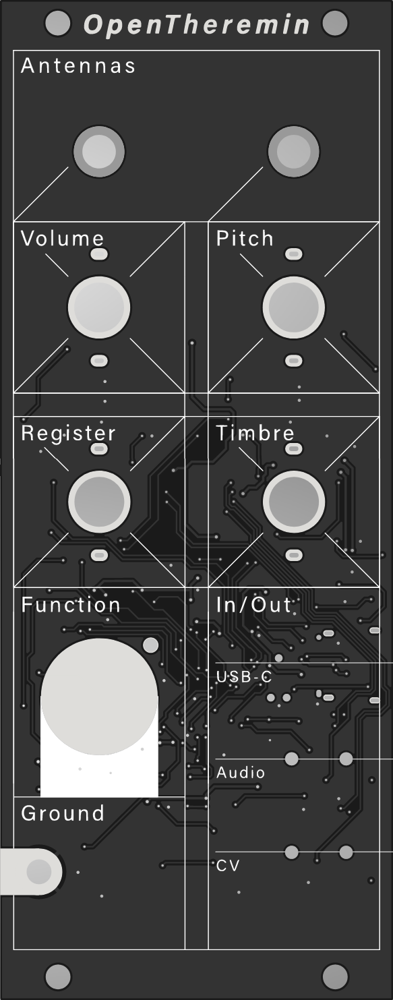
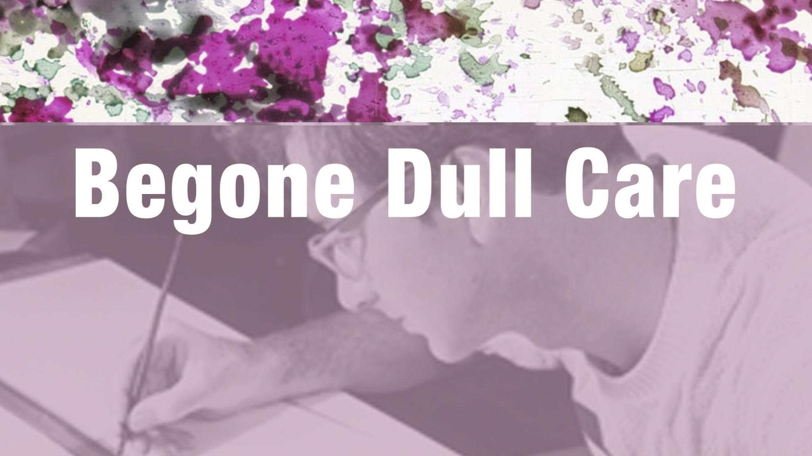
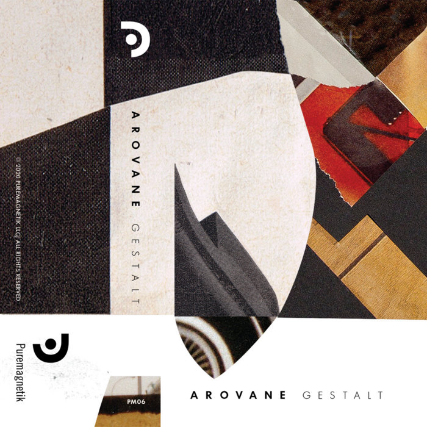

INSTRUMENTS / SOFTWARE / CULTURE按下一个音之后，
还有什么可以改变？
声音设备的设计不止于触发：手指可以继续滑动，控制消息可以被重新分配，声音可以经过另一条处理链。今晚从两件现有工程读这些关系，再看工具、调制与制作。文化短栏把视线转向胶片：没有摄影机，颜色和节奏也能构成一部电影。
01 / PROJECT READING · CONTINUOUS CONTROLLinnStrument：
网格上的一个音，并未在按下时结束。
同一根手指可以同时给出横向位置、纵向位置和压力。关键不只是传感器读到了多少数据，还在于下游音源怎样把这些数据分给每一个音。
Roger Linn Design 的 LinnStrument 是 MIDI 控制器，本身并不是装载了某套合成器音色的音源。标准型号有 25 × 8 个触点，小型号为 16 × 8；网格行之间存在音高关系，触点数量也不能直接当作互不重复的音高数量。演奏时，横向滑动用于音高变化，纵向运动与压力则可映射到音色、响度等参数，实际效果取决于接收端的设置。
 压力维度示意 / Roger Linn Design。此图是说明图，不是传感器截面或实物测量。 图像来源 ↗
压力维度示意 / Roger Linn Design。此图是说明图，不是传感器截面或实物测量。 图像来源 ↗
两个手指，为什么需要两条成员通道？
普通 MIDI 单通道里的 Pitch Bend 会影响这条通道上的音；若两个手指都在滑动，就很难仅靠一个通道独立表达两种弯音。MPE 把一组通道划成主通道与成员通道：共享控制留在主通道，各触点的音符、弯音、CC74 与 Channel Pressure 则可在成员通道内各自变化。传统 Polyphonic Key Pressure 本来就能表达逐音压力，因此不能笼统说“单通道完全没有逐音表现力”。
| 示例分配 | 成员通道 | 持续变化 |
|---|
| 手指 A 按住一个音 | 2 | 该通道的弯音、CC74、压力 |
| 手指 B 按住另一个音 | 3 | 独立的另一组变化 |
| 整组音符共享控制 | 主通道 1 | 例如延音踏板、程序选择 |
概念分配示例，不是本刊捕获的 MIDI 数据。MPE 也有上区配置；具体成员通道范围、轮换方式与音源支持情况需要按设备设置核对。
开源固件，适合拿来追踪“控制”
作者公开的固件针对 Arduino Due 平台。阅读入口可以先问三个具体问题：触点状态如何更新、松手怎样结束一个音、连续运动如何转为 MIDI 消息；再去追踪相应代码，比先背完所有参数更容易建立结构。README 的当前版本为 2.3.4，2.4.0 仍列作未发布，不把开发条目当成已经交付的功能。
继续看：先对照官方的 Smart MIDI 与 MPE 说明，再读固件。控制器发出了独立弯音，并不保证接收端的普通单通道音色会按预期响应。
设备与三个维度 ↗官方 MPE 说明 ↗Smart MIDI ↗开源固件 ↗依据官方资料与源码说明；未进行设备实测。
02 / OPEN HARDWARE · V5.1 DOCUMENTATIONZynthian：
先画声音的路径，再决定装什么引擎。
这是一台以 Raspberry Pi 为计算核心的开源声音工作站。它值得学习的部分，是 MIDI、合成器、效果器和音频接口怎样被组织成可操作的系统。

V5.1 装配文档主板原图 / Zynthian Wiki，CC BY-SA 3.0。板上 PCB 修订号与整机套件版本属于不同层级。 图像来源 ↗
当前 V5.1 技术规格列出 Raspberry Pi 5、5 英寸触摸屏、四个旋转编码器与二十个按键；主板提供两路平衡输入、两路平衡输出、耳机与 DIN MIDI 接口。音频部分列出 PCM5242 DAC 与 PCM1862/63 ADC。这里的转换器能力与系统当前运行的采样率是两件事，不能仅凭芯片支持 192 kHz，就宣布某台机器已经在这一档工作。
相同面板，可以有三种完全不同的链
V5 用户指南把处理单位称作 chain。Synth chain 从 MIDI 开始，经合成引擎生成音频，再进入效果与混音；Audio chain 从外部音频进入；MIDI chain 则只处理控制事件，末端可以仍然输出 MIDI。这种分类直接决定排查路径：音频输入没声音，首先要确认链是否接收音频，不能只在合成器预设里找答案。

官方信号流程图 / Zynthian Wiki，CC BY-SA 3.0；文档示意，不是本刊测量。 图像来源 ↗
链内部还可以组织串行或并行处理。串联压缩与延迟，和把两条分支送入混音器，输入输出的关系不同；先用纸笔画出端点与分支，会比一边加插件一边猜信号走向更有效。读开源声音工程时，也可以沿这个顺序拆开：硬件接口负责把信号带进来，路由负责把它交给谁，引擎负责处理，面板负责让人看见和改变状态。
制作经验入口：装配指南把主板、排线与散热部件分别列出。做自己的声音设备时，除了“能否装进外壳”，也值得检查热路径、连接器方向与后续维护空间。
当前技术规格 ↗声音链与操作指南 ↗V5.1 装配记录 ↗本文为文档阅读；未安装或测试套件、插件与音频性能。
07 / KNOWLEDGE NOTE · MULTIPLICATION两个频率相乘，
为什么出现另外两个频率？
把理想的 400 Hz 与 1000 Hz 正弦信号相加，仍然只得到这两个频率；把它们相乘，结果会包含差频 600 Hz 与和频 1400 Hz。这是环形调制常用来解释的关系，可以直接由积化和差公式读出：
sin(2π · 400t) × sin(2π · 1000t)
= ½ cos(2π · 600t) − ½ cos(2π · 1400t)

本刊原创数学示意 / 输入均为单位振幅、无直流偏置的理想正弦。谱线是解析结果，不是 FFT、声卡或硬件实测；负号影响相位，幅度图画其绝对值。两个前提很重要。输入若不是单一正弦，每一组频率成分都会参与相乘；调制信号若叠加直流偏置，展开式里就会保留一项原载波，不能再照抄“只剩两个新频率”的结论。所谓声音变得复杂，首先可以落实成这些可追踪的频率关系。
源码入口：ChucK 的 ring.ck 用 3 => g.op 把 Gain 的组合方式设为相乘；示例接入真实音频输入，因此不等同于上图的双正弦条件。先看运算定义，再看输入是什么，才不会用同一个频谱解释所有环形调制。
ChucK 官方 ring.ck ↗本文公式为解析推导；未录音或进行硬件测量。
08 / BUILD READING · OPEN THEREMIN V4OpenTheremin：
天线测到的变化，怎样接上波表？
这件开源工程把近距离电容感应、校准、数字发声和模拟输出放在同一块板上。它适合沿着信号逐段读，而不只把 Arduino 看作一个神秘的声音盒子。
两根天线分别用于音高与音量控制。作者的项目说明采用外差振荡器把手与天线之间的变化送入数字处理，ATmega328P 再进行相应的线性化、滤波与声音生成；输出由外部 DAC 负责。阅读时先分清传感、控制量与音频，这三类信号的时间尺度和作用不同。
入口很短，工作分在不同文件里
版本 4.5 的入口注释把主要职责列得相当清楚：application.cpp 管理演奏／校准状态与更新，calibration.cpp 处理校准，ihandlers.cpp 包含发声相关中断，SPImcpDAC.h 负责 MCP492x DAC 的 SPI 通信。波表文件保存 1024 点数据，不能把这些职责全想成在 loop() 里顺次做完。
这个分工也提示一项制作经验：校准不是附属菜单，它决定传感变化怎样映射成可演奏的范围。继续阅读可先找校准结果怎样保存到 EEPROM，再看音高／音量更新与音频输出如何交换状态。公开的原理图、PCB 与物料信息则能帮助把软件文件名重新对应到元件和接口。

GaudiLabs / Urs Gaudenz 官方 PCB 设计图；EDA 渲染，非实物照片。项目附 GPL-3.0。 图像来源 ↗
原项目、图纸与制作资料 ↗4.5 入口与架构注释 ↗依据作者说明与入口文件阅读，未搭建、试听或测量；文件分工不等于本刊已逐行验证全部实现。
09 / CULTURE · DIRECT ANIMATION / 1949《Begone Dull Care》：
胶片也能直接成为画布。

NFB 官方现代宣传图 / © National Film Board of Canada。不是 1949 年原始海报，也不是影片画面截帧。 图像来源 ↗
EVELYN LAMBART + NORMAN McLAREN
BEGONE DULL CARE / CAPRICE EN COULEURS
1949 · CANADA · APPROX. 8 MIN
颜色、笔触与节拍，
可以直接发生在同一条胶片上。
这部由 Evelyn Lambart 与 Norman McLaren 合作的短片，配乐来自 Oscar Peterson Trio。加拿大国家电影局的说明强调其直接在胶片上绘制的制作方法：形状与颜色不必先成为镜头前的对象，再被摄影机记录。
值得带着一个具体问题看：画面是在某个重音处切换形状，还是让纹理持续流动、与节拍形成另一种关系？这能把“音乐可视化”从笼统的同步，细分为速度、密度、颜色与段落的安排。也可以顺着片尾署名继续了解 Lambart 的工作，避免只记住其中一位合作者。
NFB 影片、介绍与完整署名 ↗唱片 / RECORDS

arovane
Gestalt
回听 / 2020-03-24 · 13 TRACKS
Uwe Zahn 从单一合成器声音出发，将音色、音高调制与噪声组织成十三首作品。发行页以《siir》说明这一做法；Taylor Deupree 完成母带，John Whitlock 提供封面。
展开原站播放器 / LISTEN
封面 © John Whitlock / arovane；文字依据发行页 About 与署名，非本刊试听记录。